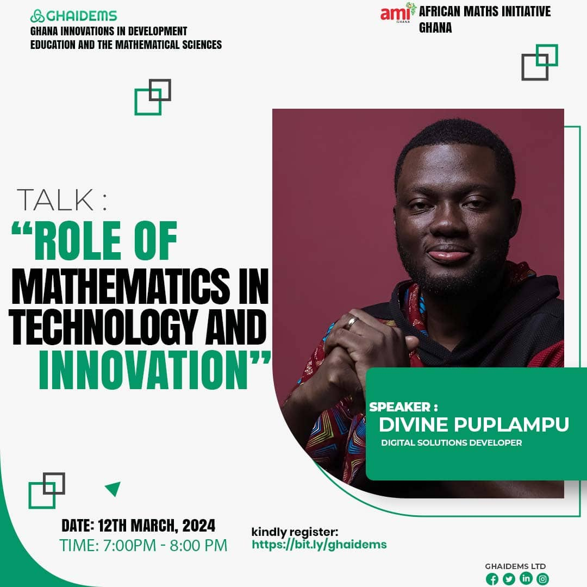
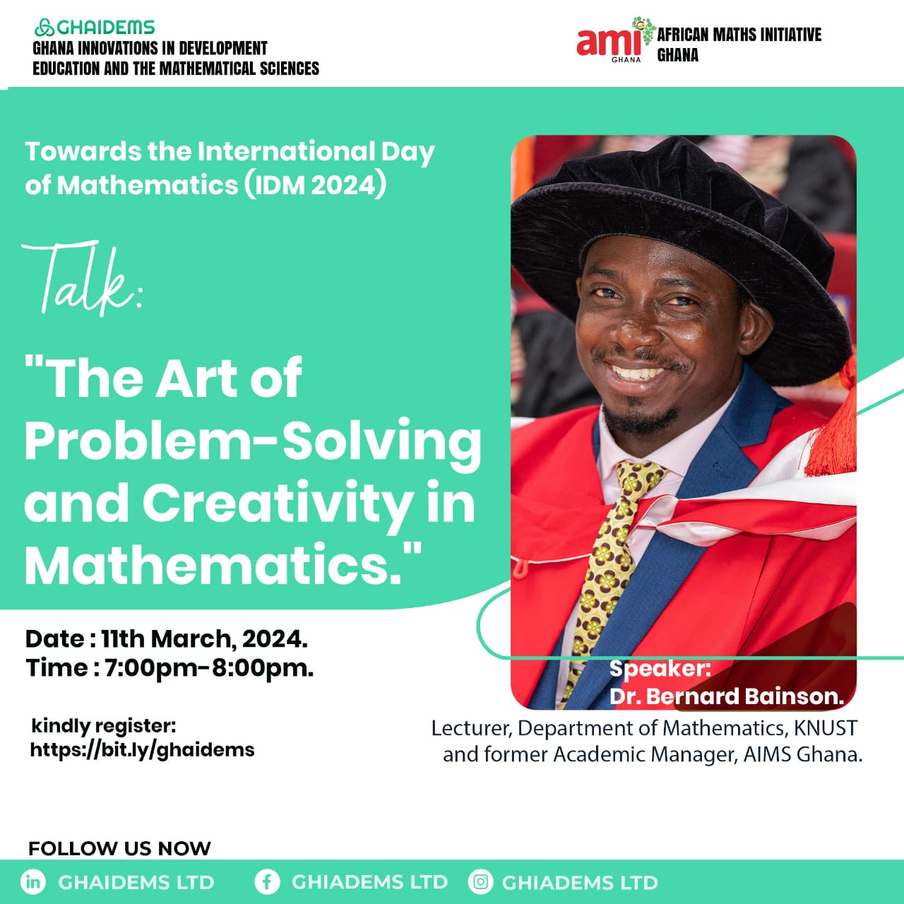

Talk 5: Artistic Mathematics: Truth and Beauty.

GHAIDEMS and AMI Ghana present the fifth IDM 2025 Webinar Series to celebrate the International Day of Mathematics (IDM 2025).
Do you know how to make mathematical visualization, making accurate, effective, and beautiful pictures, models, and experiences of mathematical concepts.
Join this 5th Episode of the 2025 International Day of Mathematics(IDM) Webinar Series where Prof. Henry Segerman leads us to discover making mathematical visualisations and much more!This session will show how simple it is to make accurate and effective pictures and models. No advanced math needed — just curiosity, creativity, and a tool like GeoGebra.
In this talk, Prof. Henry Segerman discusses their work in mathematical visualization, focusing on creating accurate, effective, and aesthetically pleasing pictures, models, and experiences of mathematical concepts. He will explore what makes a visualization compelling and present numerous examples using 3D printing, along with projects in virtual reality and spherical video. Additionally, they share their experiences teaching a project-based class on 3D printing for mathematics students.
About the Speaker
Prof. Henry Segerman is a mathematician, working mostly in three-dimensional geometry and topology, and a mathematical artist, working mostly in 3D printing. He is a professor in the Department of Mathematics at Oklahoma State University, and author of the book "Visualizing Mathematics with 3D Printing"
Join us by registering using the link https://bit.ly/ghaidems_ami. if you have not registered in the this episode to secure your spot.
Join Zoom Meeting at IDM Webinar Series 2025. Meeting ID: 676 7095 1208. Passcode: gh2025
For more information, please contact us at info@ghaidems.org
Talk 4: It Starts With A Circle.

GHAIDEMS and AMI Ghana present the fourth IDM 2025 Webinar Series to celebrate the International Day of Mathematics (IDM 2025).
Do you know how to graph a circle on a computer screen? Most people would think of the sine and cosine functions to do the job.
Join this 4th Episode of the 2025 International Day of Mathematics(IDM) Webinar Series where Prof. Frank Farris leads us to discover the surprising power of complex numbers in drawing perfect circles — and much more!This session will show how simple circular motions can be combined to create any shape imaginable. No advanced math needed — just curiosity, creativity, and a tool like GeoGebra.
In this talk, Prof. Frank Farris will explain how to make the task simpler using complex numbers. Even if you are not familiar with this convenient repackaging of Cartesian coordinates, any computer system like Geogebra knows perfectly well how to handle complex quantities. Once we understand circles, I'll explain how a superposition of circular motions can in fact create any shape at all! We finish by discovering recipes that will allow you to create your own beautifully symmetric curves.
About the Speaker
Prof. Frank Farris has taught at Santa Clara University since 1984. He served as Editor of Mathematics Magazine from 2001-2005, and again in 2009. A frequent contributor to exhibitions of mathematical art, he finds ways to use knowledge of mathematics to create digital images that inspire and delight. His book, Creating Symmetry, the Artful Mathematics of Walllpaper Patterns, was published by Princeton University Press in 2015. You can discover more works by the speaker from this link: https://webpages.scu.edu/ftp/ffarris/index.html.
Join us by registering using the link https://bit.ly/ghaidems_ami. if you have not registered in the first episode to secure your spot.
Join Zoom Meeting at IDM Webinar Series 2025. Meeting ID: 676 7095 1208. Passcode: gh2025
For more information, please contact us at info@ghaidems.org
Talk 3: Geometric Patterns from Positive Integers.

GHAIDEMS and AMI Ghana present the third IDM 2025 Webinar Series to celebrate the International Day of Mathematics (IDM 2025).
GHAIDEMS and AMI Ghana invite you to a fascinating exploration of how numbers take shape in the world of geometry—where mathematics meets visual beauty.
In this engaging journey, we delve into how simple integers can be transformed into stunning geometric arrangements—squares, triangles, hexagons, stars, and more—revealing patterns that are as artistic as they are logical. This event celebrates the harmony between form and function, showing how mathematics is not only a language of precision but also a canvas for creativity.
Any positive integer can be visually represented by a geometric arrangement of items. For example, square numbers can be represented by a square grid of items. Other geometric arrangements can be created such as triangles, hexagons, and stars. We'll explore some of the relationships among numbers that can create interesting geometric patterns.
About the Speaker
David Reimann shares his lifelong love of mathematics through his award-winning visual art. Mathematical elements such as symmetry, geometry, and number are common themes in his work, used to create patterns that convey messages on multiple levels and scales. His piece Pi exemplifies this by celebrating the mathematical constant pi, its relationship with the circle, and the infinitely many digits in its decimal representation. He provided original cover art for Mathematics Magazine, a publication of the Mathematical Association of America, from 2015 through 2020. Reimann has bachelor's and master's degrees in mathematics and a doctoral degree in computer science. He is a Professor of Mathematics and Computer Science at Albion College. Prior to joining the faculty of Albion College in 1996, he spent ten years as a medical imaging researcher at Henry Ford Hospital in Detroit.
Join us by registering using the link https://bit.ly/ghaidems_ami. if you have not registered in the first episode to secure your spot.
Join Zoom Meeting at IDM Webinar Series 2025. Meeting ID: 676 7095 1208. Passcode: gh2025
For more information, please contact us at info@ghaidems.org
Talk 2: Making Art with Mathematics: How we can see and feel Abstract Ideas.

GHAIDEMS and AMI Ghana present the second IDM 2025 Webinar Series to celebrate the International Day of Mathematics (IDM 2025).
GHAIDEMS and AMI Ghana are collaborating to bring you a transformative online event exploring the intersection of mathematics and art—where abstract ideas come alive through form, pattern, and beauty.
This series reflects their shared commitment to showcasing how mathematics is not only a tool for analysis but also a powerful medium for creative expression. By transforming numbers and equations into visual experiences, we uncover a new way to see and feel the elegance of mathematical thought.
Join us for an immersive journey into the world of mathematical art. Whether you're a curious learner, a passionate educator, or someone who finds wonder in the blend of logic and creativity, this event invites you to explore the hidden aesthetics of mathematics. Discover how mathematical thinking can inspire artistic exploration, nurture imagination, and reveal the deep connections between logic, beauty, and human experience.
About the Speaker
Prof. Edmund O. Harriss is a British mathematician, artist, and educator who blends art with cutting-edge geometry. His work explores tiling patterns, fractal spirals (like the Harriss Spiral), and the plastic ratio. Creator of curvahedra sculptures (studied at MIT for architectural applications) and co-artist behind the Mathemalchemy project. He is Known for demystifying math on Numberphile and crafting public art to visualize abstract concepts. He is also a visionary in bridging STEM and art. Prof. Harriss is currently a professor at the University of Arkansas, USA.
Join us by registering using the link https://bit.ly/ghaidems_ami. if you have not registered in the first episode to secure your spot.
Link to Zoom Meeting will be posted soon.
For more information, please contact us at info@ghaidems.org
Talk 1: Fractals – The Infinite Beauty of Mathematics.

GHAIDEMS and AMI Ghana present the first IDM 2025 Webinar Series to celebrate the International Day of Mathematics (IDM 2025).
GHAIDEMS and AMI Ghana are collaborating to bring you a transformative online event exploring the world of self-replicating patterns, nature’s art, and infinite complexity. This series underscores their commitment to showcasing the profound beauty of mathematics and its pivotal role in understanding the intricate designs of our universe and shaping our future.
Join us for an immersive journey into the captivating world of self-replicating patterns and infinite complexity. Whether you're a curious learner, a passionate educator, or simply someone who marvels at the intricate beauty of nature.
This event offers a unique opportunity to explore the hidden harmonies that govern our universe. Discover how these patterns inspire creativity, foster critical thinking, and reveal the profound interconnectedness of all things.
About the Speaker
Dr Bruce Bayly studied Mathematics at Cambridge and Princeton. He taught at the University of Arizona (USA) for over 30 years, also conducting research in theoretical fluid mechanics. Bruce led outreach programs to inspire children with the excitement of maths and science, collaborating with the National Museum of Mathematics in New York City. In 2023 Bruce joined the US Peace Corps, and is now teaching Mathematics in a Junior High School in the Volta Region of Ghana. He worked with the 2024 Allotey Mathematics Camp, and is looking forward to future collaboration with mathematics educators in Ghana.
Secure your spot today by registering at https://bit.ly/ghaidems_ami. Please note that space is limited, and early registration is encouraged.
Join Zoom Meeting at IDM Webinar Series 2025. Meeting ID: 676 7095 1208. Passcode: gh2025
For more information, please contact us at info@ghaidems.org
3-Day Training on Data Science
GHAIDEMS in collaboration with the Association of Computer Science, Mathematics & Statistics Students of the Kwame Nkrumah University of Science and and Technology, KNUST, organized a 3-day training on data science.
In the span of three days, participants were taken through the following topics:
1. Introduction to Data with R and R-Instat: This session was taken by Prof. Roger Stern and Dr. Francis Torgbor. Participants were introduced to sources of data, data acquiscition, data wrangling and visualization using the R programming language, and the R-Instat software.
2. Introduction to Data Science: This session was taken by Dr. Lily Clements and Mr. Nicholas Opoku. Participants were introduced to the science of data. Particularly, this was on how to make sense of data, understanding variablility in data, and building meaningful and useful models.
3. Introduction to Python for Data Science: This session was taken by Dr. George Simmons and Mr. John Bagiliko. Participants were introduced to the basics of the Python programming language, and how it is used for data science.
These sessions were very interactive and hands-on. Did you miss it? You can still get access to the resources and recordings of the sessions. The materials are all available here.
For more information, please contact us at info@ghaidems.org
Careers in Mathematics and How Playing Plays a Role
GHAIDEMS and AMI Ghana present the third of a three-day webinar series to celebrate the International Day of Mathematics (IDM 2024).
Join us for insightful discussions, engaging presentations, and a celebration of the beauty and significance of mathematics. Whether you're a student, educator, parent or simply curious about math, this series is for you!
About the Panelists
Moderator - Prof. Franca Hoffmann
Franca obtained her master’s in mathematics from Imperial College London (UK) and holds a PhD from the Cambridge Centre for Analysis at University of Cambridge (UK). She held the position of von Kármán instructor at Caltech from 2017 to 2020, then joined University of Bonn (Germany) as Junior Professor and Quantum Leap Africa in Kigali, Rwanda (African Institute for Mathematical Sciences) as AIMS-Carnegie Research Chair in Data Science, before arriving at the California Institute of Technology as Assistant Professor in 2022. She currently serves as AIMS International Scientific Advisor. Franca has co-organized numerous math and science outreach activities across the African continent for over a decade, from primary school activities to advanced research trainings. She serves as Director of the charity Supporting African Mathematics Initiatives (SAMI).
Industry Panelist Representative - Dr. Habiboulaye Amadou Boubacar
Dr. Habiboulaye is an experienced and accomplished professional in the field of Artificial Intelligence. He is the head of the R&D Data Intelligence team at Air Liquide with the qualification of International Senior Expert (ISE). He has a PhD in Machine Learning & Data Mining and over 16 years of experience in hands-on leading roles in AI. He has been managing the implementation of various cutting-edge AI solutions through industrial and healthcare projects. He frequently maintains strong collaborations with academic researchers and industrial experts to explore the next frontiers of AI. Alongside his contributions in industry, he is also a lecturer for l’Université de Technologie de Troyes (UTT, France), Institut de Sciences Mathématiques et Physiques (IMSP, Benin) and African Institute of Mathematical Sciences (AIMS). He is also the founder of the non-profit organization AI4Africa.org.

Teacher Panelist Representative - Dr. Herine Otieno
Herine is a Pan African educationist, researcher and budding Edu-entrepreneur. Her work straddles STEM Education, education technology & higher education teaching, learning & research. A mathematics major at undergraduate, Herine first masters was in statistics. Her second Masters is in Social Sciences & her PhD is in mathematics education.
Parent Panelist Representative - Dr. Peter Akayuure
Peter Akayuure is a devoted parent who is deeply passionate about fostering children's mathematical reasoning, creativity, and problem-solving skills. Beyond providing academic support, Peter is committed to making his daughters participate in workshops and events focused on applying mathematical concepts to real-life situations. His daughter was among few children who participated in the Allotey Maths camp in 2022. Believing in the importance of aligning mathematics learning with cultural experiences, he advocates for using games, puzzles, stories and real-life scenarios to nurture critical minds of children. He is also an Associate Professor of Mathematics education at the University of Education Winneba. His research interests include Geometry and spatial reasoning, assessment literacy, digital technologies, use of indigenous games to teach Mathematics and promote STEM skills. As a parent and math educator, Peter loves to share his experience on how parents can support in nurturing their wards to excel in mathematics beyond grades.
Student Panelist Representative - Ms. Adwoa Konadu Appiah
Adwoa was a 2016 Allotey Maths Camp participant and a former student of African Science Academy, where she studied A-level physics, Mathematics and Further Mathematics. She went on to pursue her Barchelor's degree in AI and Software Engineering at the University of Edinburgh and is currently pursuing a Software Engineering career with TSB Bank in Scotland.
Education Initiatives Panelist Representative - Dr. Francis Feehi Torgbor
Francis is a climate data analyst with expertise in supporting the communication of climate information to farmers through the Participatory Integrated Climate Services for Agriculture (PICSA) approach in Africa. He collaborates closely with meteorological services in Africa to ensure the generation of quality data and climate analyses relevant for PICSA. Additionally, he is a founding director of GHAIDEMS Ltd and the African Maths Initiative (AMI Ghana), an NGO. He is generally committed to promoting mathematics education and research for nationwide development, fostering a positive mathematical culture in Africa.
Secure your spot by registering below if you have not already registered for the first webinar:
https://forms.gle/sQDCKpkhB7Mg1wvg8
For more information, contact us at info@ghaidems.org
Role of Mathematics in Technology and Innovation

GHAIDEMS and AMI Ghana present the second of a three-day webinar series to celebrate the International Day of Mathematics (IDM 2024).
Join us for insightful discussions, engaging presentations, and a celebration of the beauty and significance of mathematics. Whether you're a student, educator, parent or simply curious about math, this series is for you!
About the Speaker
Mr. Divine Puplampu is a Technology Entrepreneur, Software Engineer, and Digital Marketing enthusiast with over 14 years of experience in developing innovative digital solutions. He is currently a consulting General Manager at Stratcon Digital; a subsidiary of Stratcon Energy & Trading a major Bulk Oil Distributor in Ghana.
He is also the co-founder and Tech Lead at Stimuluz Technologies, where he leads a team of 8-developers to develop digital solutions. He also had a stint at the University of Ghana Computing Systems (UGCS) during his National Service. At UGCS, he was part of the 5-man team that deployed the Sakai E-learning System at the University of Ghana; the e-learning tool that became indispensable during the height of the COVID-19 pandemic.
Passionate about empowering the youth, particularly the Christian community, Divine regularly conducts free training sessions on leveraging social media for positive impact. He also dedicates his time and skills as an IT Associate volunteer for several non-governmental organizations, including the Ghana Community Radio Network (GCRN), Nneka Youth Foundation, FactSpace West Africa and the Rocky Dawuni Foundation. Divine also volunteers as a Digital Media Enabler at the Trinity Baptist Church, Ghana, where he applies his expertise to enhance the church's digital presence.
With a strong commitment to utilizing technology to solve everyday challenges, Divine has contributed to over 100 digital projects for various brands and startups across Africa. His client portfolio includes prominent organizations such as the Africa Continental Free Trade Area Secretariat (AfCFTA), Center for Democratic Development (CDD), Prudential Life Insurance, Africa World Airlines, Nyaho Medical Centre, Noguchi Memorial Institute for Medical Research, University of Ghana Business School, Omni Media (CitiFM & CitiTV), Ghana Chamber of Bulk Oil Distributors (CBoD), Ghana Standards Authority, Ghana Climate Innovation Center, Petroleum Commission of Ghana, Ghana Tourism Authority, Stratcon Energy & Trading Limited, Ghana Enterprises Agency (Formerly NBSSI), UK- Ghana Chamber of Commerce, National Communications Authority (NCA), The Jospong Group, Zoomlion Ghana Limited, Tesah Capital, iWatch Africa, FactSpace West Africa, appsNmobile Solutions (Fintech), EIB Network (GhOne & StarrFM), OccupyGhana, Africa Women's Sports Summit, Yango Ghana, QualiTrace (AgriTech Startup), NewAge Agrimedia, GUBA Enterprise (UK & Ghana), Ghana Football Association Normalisation Committee, Mission89 (Switzerland), SpruseClean (USA), Thirdway Capital (Canada) and Ecodyst (USA).
Secure your spot by registering below if you have not already registered for the first webinar:
https://forms.gle/sQDCKpkhB7Mg1wvg8
For more information, contact us at info@ghaidems.org
The Art of Problem-Solving and Creativity in Mathematics

GHAIDEMS and AMI Ghana present the first of a three-day webinar series to celebrate the International Day of Mathematics (IDM 2024).
GHAIDEMS and AMI Ghana are collaborating to bring you an unparalleled online event. This series is part of our commitment to highlighting the importance of mathematics in our everyday lives and its critical role in our future.
This event is perfect for students eager to deepen their mathematical knowledge, educators looking for innovative teaching methods, parents interested in supporting their children's education, and anyone curious about the role of mathematics in shaping our world.
Join us as we explore the vast world of mathematics through insightful discussions, engaging presentations, and interactive sessions. Our series aims to unveil the beauty and significance of mathematics, demonstrating its pivotal role in innovation, technology, and solving global challenges.
About the Speaker
Dr. Bernard Oduoku Bainson is a lecturer at the Kwame Nkrumah University of Science and Technology, Kumasi and AIMS Ghana. He was also the academic manager of AIMS Ghana. He is a well-trained algebraist who applies the skill of abstraction of core structures, design and verifiable strategies to solving problems. Have had years of experience in teaching across the various levels of education in multicultural environments. Some of which are; Tutoring the School of Mathematical and Computer Sciences, Heriot Watt University where he assisted students with disabilities to access the best quality education provided by the university. He also Volunteered as a Mathematics teacher at Agonaman Senior High School and continues to volunteer to support the Allotey Maths camp. He did his masters at AIMS Ghana and his undergraduate degree at University of Cape Coast.
Secure your spot today by registering at https://forms.gle/sQDCKpkhB7Mg1wvg8. Please note that space is limited, and early registration is encouraged.
For more information, please contact us at info@ghaidems.org